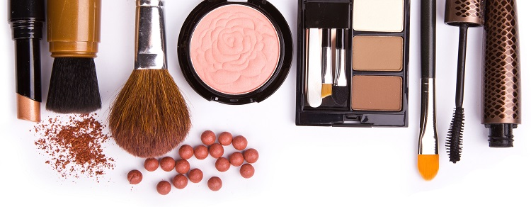
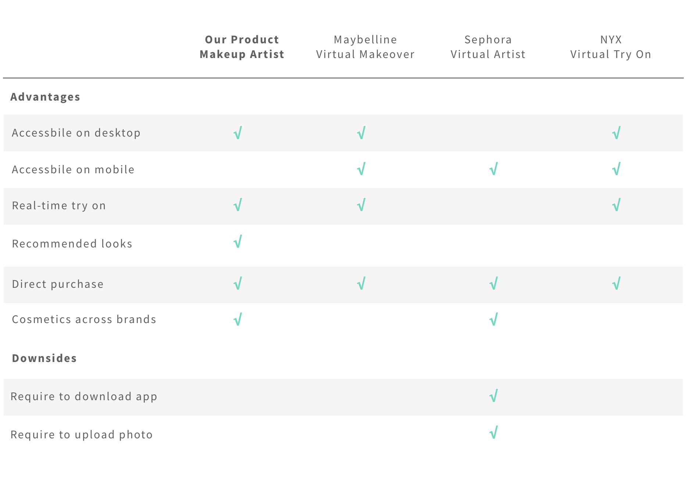

Problem Statement

Domain and Context
E-commerce and digital consumer experience have dramatically changed the beauty industry, giving consumers the ability to purchase cosmetics directly online. The very personal nature of these products, however, adds an element of risk to such purchases; customers have no way of knowing how a particular cosmetic or beauty item will look on their own faces, or the quality of such products. This feeling of risk increases the more the consumer deviates from their accustomed “look” and cause frustration and unhappiness for the consumers. In addition to that, although people often visit YouTube to find video makeup tutorials, they still have no idea how the makeup would look on their own faces until after they finish applying the makeup.
Constraints
When shopping for cosmetic products, people either have to try them on in the shop or, if shopping online, accept the risk that the product they buy will not look good on them. When following YouTube tutorials, people may find the “look” they want, but the risk of not knowing how it will look on their faces still exists.
Competitive Analysis

Although “Try it on” features are part of some mobile apps, space constraints make a mobile screen less than ideal for trying on a multifaceted new look. Many cosmetic try-on apps require the user to upload a photo of themselves, limiting them to a single static version of their potential look.